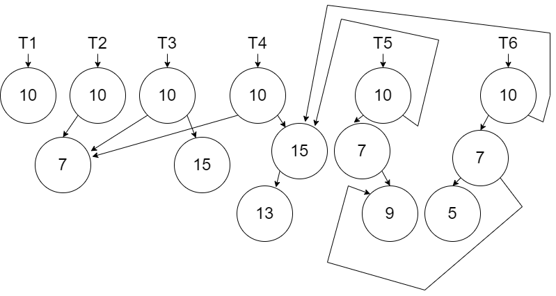
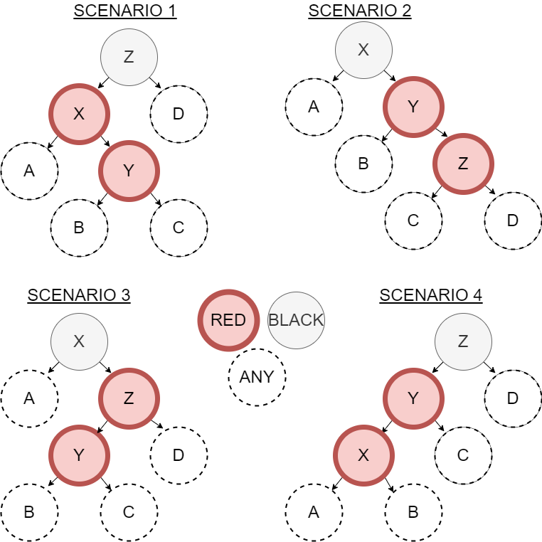

Chapter 8 - Trees
In this lesson we will learn about our second data structure called the Binary Search Tree. When we learned about persistence we learned about the list as it is implemented in Erlang. When we learned about monads, we introduced a new version of the list which was created using our own custom tuples. The Binary Search Tree will use this same custom approach.
8.1 Binary Search Tree
A binary search tree is a tree that stores smaller values to the left and larger values to the right. Each node in the tree in defined by 3 fields: value, link to the left sub-tree, and link to the right sub-tree.
The tree is useful because we can quickly search for values by asking ourselves, “is the value we are looking for larger or smaller (or maybe we found it) than the one in the current node of the tree?” This is like guessing a number between 1 and 100 and always guessing 50 first. Searching in the tree will ideally exclude half of the values with each comparison. We will explore this “ideal” performance in the next part of the lesson.
Persistence is a curious thing to consider visually with the tree. In the diagram below, we show the creation of a tree with one node valued 10 called \(T_1\) .

When we add a new node with value 7 (in this case something that will go left of the root node), we must persist \(T_1\). Since the left link in the root node must change, then we need a new node to create \(T_2\).

If we now add a node with value 15 to the right of the root node, we are only affecting the right link. The new node we created in the previous step can be reused in creating \(T_3\).

In the next diagram we show the creation of \(T_4\) by adding the new node with value 13.

In the next diagram we show the creation of \(T_5\) by adding the new node with value 9.

Finally, we show the creation of \(T_6\) by adding the new new node 5.

The software will discard older versions of the Tree when they are not needed anymore. However, the persistence we use in the data structure is important to satisfy the immutability rules.
Notice that the there is always a path through the tree that we have to re-create from the root node down to the node that we added. When we reuse a node in the tree, we will reuse both the node and all the nodes it is connected too. We will not have to have use recursion when we reuse a node.
Let’s begin with the structure of the node:
\(struct ~ ~ node ~ ~ \lbrace a:Value, node:\mathit{Left}, node:Right \rbrace.\)
\(\nonumber\)
We will implement two functions in our binary search tree. The add function will add a value to the tree and the contains function will search the tree for a value and return a true or false. When we add to a tree or we search in a tree, we will do so recursively through nodes beginning with the root node. When we add to a tree, the result will be an updated root node (or an updated sub-tree root node as we recursively create our new tree).
\(spec ~ ~ add :: a ~ ~ node \rightarrow node.\)
\(spec ~ ~ contains :: a ~ ~ node \rightarrow boolean.\)
\(\nonumber\)
In our specification, we are assuming that \(a\) represents a type that can be compared with boolean operators.
There are 4 scenarios when adding a new item to a tree:
* Empty Tree - Create a new root node. We will define an empty tree as nil.
* Value to add is less than the current node value - Create a new node reusing the right link. The left link is created by recursively calling add on the left sub-tree.
* Value to add is greater than the current node value - Create a new node reusing the left link. The right link is created by recursively calling add on the right sub-tree.
* Value to add is equal to the current node value - In our tree, we will require all values to be unique. In this case, we get to reuse the entire node including both left and right links. The tree can be implemented differently by allowing duplicates perhaps stored to the right.
The definition for add is given below. The implementation for both add and contains will be left for an exercise.
\(\mathit{def} ~ ~ add :: New\_Value ~ ~ nil \rightarrow \lbrace New\_Value, nil, nil \rbrace;\)
\(\mathit{def} ~ ~ add :: New\_Value ~ ~ \lbrace Value, Left, Right \rbrace \rightarrow \lbrace Value, (add ~ ~ New\_Value ~ ~ Left), Right \rbrace ~ ~ \text{when} ~ ~ New\_Value < Value;\)
\(\mathit{def} ~ ~ add :: New\_Value ~ ~ \lbrace Value, Left, Right \rbrace \rightarrow \lbrace Value, Left, (add ~ ~ New\_Value ~ ~ Right) \rbrace ~ ~ \text{when} ~ ~ New\_Value > Value;\)
\(\mathit{def} ~ ~ add :: New\_Value ~ ~ Node \rightarrow Node.\)
\(\nonumber\)
Problem Set 1
You can find the template for the problem sets in this lesson here: prove08.erl
- Implement the
addfunction per the specification and definition above. Use the test code provided. - Implement the
containsfunction per the specification above. Use the test code provided.
8.2 Balanced Red-Black Tree
Since a binary search tree orders left and right of node relative to the values, traversing the tree (either to insert or find) can provide an O(log n) performance. However, this can only be achieved if the tree is balanced. If we added the numbers 1, 2, 3, 4, 5, 6, 7 in order to a tree, they would also be add to the right. Searching for a number in the tree would be the same as searching a list which is O(n)

However, if the numbers were added 4, 2, 6, 1, 3, 5, 7 then we would get a tree that allows for the maximum exclusion of values every time we go left or right.

Since we can’t rely on the order of the data, there are other strategies and algorithms that can be used. A common one is the Red Back Tree (RBT). The RBT uses a set of rules to determine if part of a tree is unbalanced. If something is unbalanced, a modification is made to balance the tree. In other words, after the creation of any node in the add function, we will potentially perform a balance function.
The rules for an RBT are as follows:
- Every node is either red or black - In our algorithm we will choose to start all nodes out red.
- The root is always black - In our algorithm we will choose to change the root node to black after the inserting and all balancing is completed.
- No two adjacent nodes are red.
- Every path from a node to a leaf has the same number of black nodes.
In our algorithm we will enforce rules and 3 and 4 with our balancing function.
To support these rules, the structure of the node must change to include the color of the node:
\(struct ~ ~ node\)
\(\quad \quad \lbrace atom(red), a:Value, node:\mathit{Left}, node:Right \rbrace ~ ~ or\)
\(\quad \quad \lbrace atom(black), a:Value, node:\mathit{Left}, node:Right \rbrace.\)
\(\nonumber\)
We will use the function names add_rbt and contains_rbt so they are unique from the traditional binary search tree. These contains_rbt is the same as contains as the color is only important for adding and therefore is unused in the contains_rbt.
The add_rbt function is very similar to the add with the following distinctions:
* When we create a new node we color it red
* When we create a new node that reuses one link and recursively adds the node on the other link, we need to call a balance function (discussed later) on the new node we created.
* When we are done adding the node, we need to change the root node to be black. This will necessitate a helper function so that we have add_rbt and add_rbt_ both.
The specification and definition for the add_rbt is shown below:
\(spec ~ ~ add\_rbt :: a ~ ~ node \rightarrow node.\)
\(spec ~ ~ add\_rbt\_ :: a ~ ~ node \rightarrow node.\)
\(\mathit{def} ~ ~ add\_rbt :: New\_Value ~ ~ Tree \rightarrow\)
\(\quad \quad New\_Root = (add\_rbt\_ ~ ~ New\_Value ~ ~ Tree),\)
\(\quad \quad \lbrace black, New\_Root.Value, New\_Root.\mathit{Left}, New\_Root.Right \rbrace.\)
\(\mathit{def} ~ ~ add\_rbt\_ :: New\_Value ~ ~ nil \rightarrow \lbrace red, New\_Value, nil, nil \rbrace;\)
\(\mathit{def} ~ ~ add\_rbt\_ :: New\_Value ~ ~ \lbrace Color, Value, \mathit{Left}, Right \rbrace \rightarrow\)
\(\quad \quad (balance ~ ~ \lbrace Color, Value, (add\_rbt\_ ~ ~ New\_Value ~ ~ \mathit{Left}), Right \rbrace) ~ ~\)
\(\quad \quad \text{when} ~ ~ New\_Value < Value;\)
\(\mathit{def} ~ ~ add\_rbt\_ :: New\_Value ~ ~ \lbrace Color, Value, \mathit{Left}, Right \rbrace \rightarrow\)
\(\quad \quad (balance ~ ~ \lbrace Color, Value, Left, (add\_rbt\_ ~ ~ New\_Value ~ ~ \mathit{Right}) \rbrace) ~ ~\)
\(\quad \quad \text{when} ~ ~ New\_Value > Value;\)
\(\mathit{def} ~ ~ add\_rbt\_ :: New\_Value ~ ~ Node \rightarrow Node.\)
\(\nonumber\)
The balance function that is being performed is based on pattern matching defined by an algorithm written by Chris Okasaki (reference Purely Functional Data Structures). In his algorithm, there are four unbalanced scenarios that need to be balanced. These adjustments are made when the add_rbt_ function is returning from all the recursive calls back up to the new root. The diagram below shows the four scenarios.

The selection of variables in these diagrams was purposeful to suggest that \(X < Y < Z\). We need code to look for each of these four scenarios. If we have any of these four, then the solution is the same shown below.

The specification for our balance is simple as it converts a potentially unbalanced node into a balanced node:
\(spec ~ ~ balance :: node \rightarrow node.\)
\(\nonumber\)
The definition for this function has 5 clauses (one for each scenario plus one in case none of them match. The first clause below corresponds to scenario 1. The next three scenarios are left for an exercise. The default clause is also given below.
\(\mathit{def} ~ ~ balance :: \lbrace black, Z, \lbrace red, X, A, \lbrace red, Y, B, C, \rbrace \rbrace, D \rbrace) \rightarrow\)
\(\quad \quad \lbrace red, Y, \lbrace black, X, A, B \rbrace, \lbrace black, Z, C, D \rbrace \rbrace;\)
\(\mathit{def} ~ ~ balance :: \text{Scenario 2 left for an exercise};\)
\(\mathit{def} ~ ~ balance :: \text{Scenario 3 left for an exercise};\)
\(\mathit{def} ~ ~ balance :: \text{Scenario 4 left for an exercise};\)
\(\mathit{def} ~ ~ balance :: Node \rightarrow Node.\)
\(\nonumber\)
The Erlang code for the definitions provided above is given below. The remaining code is left for an exercise.
balance({black,Z,{red,X,A,{red,Y,B,C}},D}) -> {red,Y,{black,X,A,B},{black,Z,C,D}};
% Scenarios 2, 3, and 4 are left for an exercise
balance(Node) -> Node.Problem Set 2
- Complete the add functionality for the RBT. The
add_rbtfunction is written for you and you need to write theadd_rbt_as described in the specification and definition above. Implement theadd_rbt_function per the specification and definition above. You will also need to finish implementing thebalancefunction for cases 2, 3, and 4 per the diagrams above. Use the test code provided. - Implement the
contains_rbtfunction per the specification below. Note that while color is used in the RBT, the color is left unused by thecontains_rbtfunction. Use the test code provided.
\(spec ~ ~ contains\_rbt :: a ~ ~ node \rightarrow boolean.\)
\(\nonumber\)
8.3 Performance
The binary search tree from Part 1 has performance of O(log n) if its balanced but as it becomes unbalanced, it becomes O(n). The RBT from Part 2 has performance of O(log n) because it maintains the balanced state. Even though there is more work needed to balance, it is offset by ability to find the spot for new nodes because its balanced.
To compare the performance of both approaches for a tree with 10,000 nodes in the problem set below, we will use the eprof library in Erlang. This library will report the number of times a function runs and the execution time of those functions. As with tools like these, there is an overhead cost for running eprof but it will not prevent us from making observations.
The following utility functions can be put around code to display performance results.
start_perf() ->
eprof:start_profiling([self()]).
stop_perf(Title) ->
io:format("Perf (~p): ~n",[Title]),
eprof:stop_profiling(),
eprof:analyze(total).If we wanted to compare the cost of adding to the front of a list and the cost of adding to the end of list, we would create a single foldl to perform those operations using a sequence of numbers from 1 to 10,000.
% Code to test
prepend(Value, List) -> [Value|List].
append(Value,[]) -> [Value];
append(Value,[First|Rest]) -> [First|append(Value,Rest)].
timing_test() ->
List = lists:seq(1,10000),
start_perf(),
lists:foldl(fun prepend/2, [], List),
stop_perf("prepend"),
start_perf(),
lists:foldl(fun append/2, [], List),
stop_perf("append"),
ok.The code will take several seconds to run. The output of eprof will include your functions and several others. Sample output (results will vary on different computers) of eprof for this code including only the functions we are testing is given below:
Perf ("prepend"):
FUNCTION CALLS % TIME [uS / CALLS]
-------- ----- ------- ---- [----------]
prove08:prepend/2 10000 22.91 1126 [ 0.11]
-------------------------------- ----- ------- ---- [----------]
Total: 32524 100.00% 4914 [ 0.15]
Perf ("append"):
FUNCTION CALLS % TIME [uS / CALLS]
-------- ----- ------- ---- [----------]
prove08:append/2 50005000 99.94 9867673 [ 0.20]
-------------------------------- -------- ------- ------- [----------]
Total: 50027524 100.00% 9873713 [ 0.20]We can see that the prepend was much faster taking about 1 millisecond versus append taking almost 10 seconds. The cost of each call wasn’t too much different. The append was plagued by all the recursive calls to add the item to the end of the list. We can see the O(n2) behavior of append when add n items.
Problem Set 3
- Compare the performance of the Binary Search Tree (
addandcontains) and the Red Black Tree (add_rbtandcontains_rbt). Use thestart_perfandstop_perffunctions to add up the total time using these functions (remember thatadd_rbtusesadd_rbt_andbalanceas well). Add the numbers 1 to 10,000 (the list is already provided to you in the test code) to both data structures in order using afoldl. This will result in the worst unbalanced tree usingadd. Do a search for the value 10,000 to force the largest search for bothcontainsandcontains_rbt). Compare the performances for our 4 functions and explain what you found.
\(\nonumber\)
\(\nonumber\)